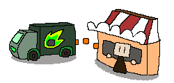

Account
Home
About
Account
Home
About
Smarter inventory, fast delivieries, better business
Sarilink is an inventory monitoring and smart delivery platform that connects Tiong San with sari-sari stores all around Baguio City. By traking stock levels in real time, Sarilink will help ensure products are restocked before they run out, keeping shelves full and customers satisfied.

Our goal is to modernize the way suppliers and sari-sari stores manage inventory and deliveries. By reducing stock shortages, improving delivery efficiency, and providing real time visibility of inventory levels, Sarilink aims to help small businesses increase sales while also helping suppliers optimize their delivery operations.
Sarilink is an inventory monitoring and smart delivery platform that connects Tiong San with sari-sari stores all around Baguio City. By traking stock levels in real time, Sarilink will help ensure products are restocked before they run out, keeping shelves full and customers satisfied
Sarilink is designed for two partners in the retail supply chain.
Small businesses often lose sales because they don't notice products are running low until it's too late. Sarilink provides a simple inventory system that tracks product quantities and alerts owners before stock runs out.
Suppliers gain a real-time overview of inventory across all partner stores. Instead of waiting for orders, they can identify which stores need replenishment and plan deliveries more efficiently.
Store owners register their inventory. They enter the products they receive from their supplier and set a minimum stock level.
Sarilink monitors stock automatically. As products are sold, inventory is updated. When an item's quantity reaches the safety limit, the system automatically flags it.
Suppliers receive instant notifications. Tiong San is informed that a partner store needs replenishment before products completely run out.
Store owners track deliveries. They can see incoming shipments, estimated arrival times, and the status of their orders in real time.
IDK lmao
Invest in the Future of Local Retail! We're developing Sarilink to transform how suppliers and sari-sari stores work together. With your support, we can continue building a platform that helps businesses reduce inventory shortages, streamline deliveries, and improve customer satisfaction.
- Develop and improve the Sarilink platform.
- Enhance inventory monitoring and delivery features.
- Expand our services to more suppliers and sari-sari stores.
- Support local businesses through smarter technology.
Together, we can create a more efficient supply network that benefits suppliers, store owners, and the communities they serve.